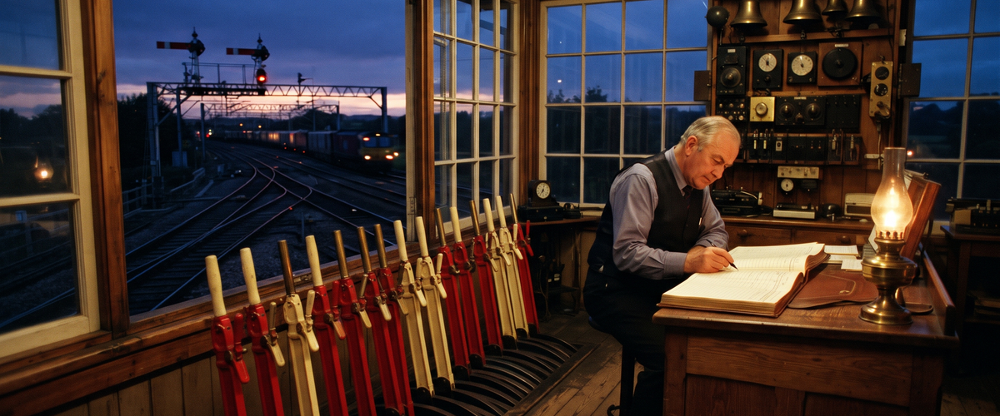

The Signal Box. A command line checker for Debian and Ubuntu systems that reports whether unattended upgrades are enabled and properly configured. It adjusts nothing: it stands over the register and confirms the entries stand written exactly as required, letter for letter, in the one book that counts.
The README's own usage line names a file that does not exist in the repository; the entry point is main.py, as the README's deviation card records. The two modes are independent, and either flag set, or both, can be run.
Option
What it does
--check-upgrades
Check the unattended upgrades status on the host the tool runs on.
--config-file
The configuration file for the audit mode. It stands undescribed in the README's parameter list; the description here comes from the parser in main.py, as the README's deviation card notes. Must be given together with --schema-file.
--schema-file
Path to the JSON schema file for the audit mode. Must be given together with --config-file; asking for one of them, or for neither mode, is a parser error.
-h
Show help message and exit.

Dusk at the windows, the lamp lit over the book.
Stated limits
The host check reads only the return code of its single dpkg -s call, never the status text, so a package left in the removed but config files remain state counts as installed.
The Allowed-Origins test is string presence: the text Unattended-Upgrade::Allowed-Origins merely has to appear in /etc/apt/apt.conf.d/50unattended-upgrades, and a commented out or empty block contains the same text and passes.
The two periodic lines, APT::Periodic::Update-Package-Lists "1"; and APT::Periodic::Unattended-Upgrade "1";, must match byte for byte, quotes, spacing, and semicolon included, in /etc/apt/apt.conf.d/20auto-upgrades exactly, although apt accepts several spellings of the same settings and reads every file in the directory. A correctly configured host can fail here on formatting alone.
No predefined schema or rule set ships with the tool for its second mode.